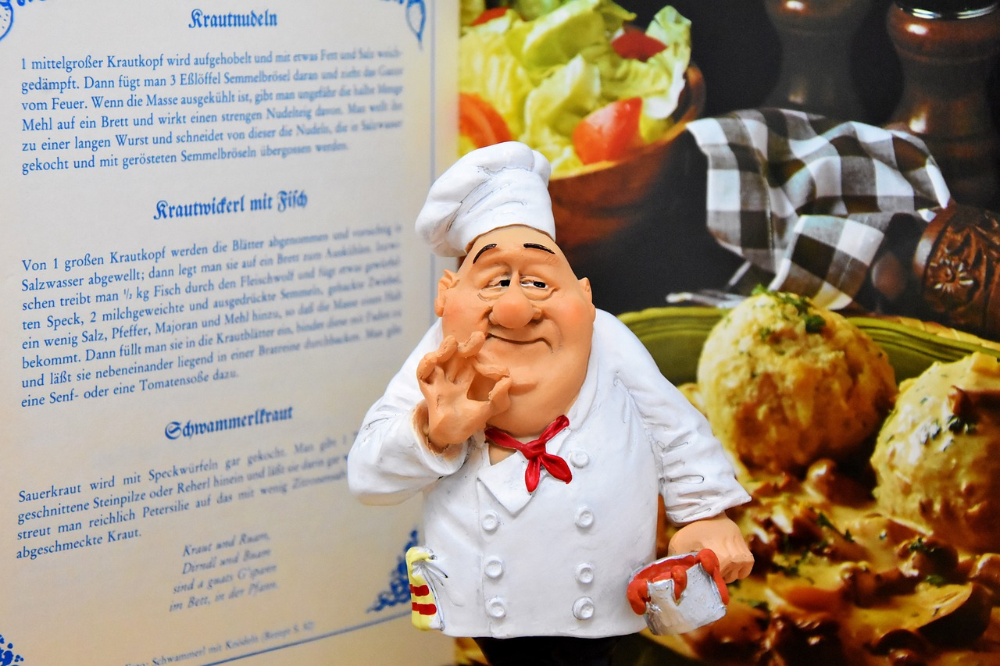
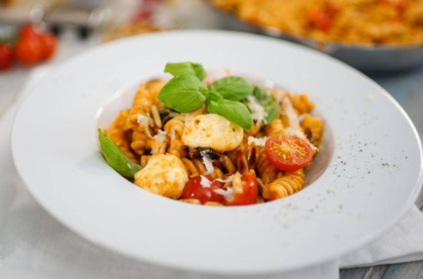
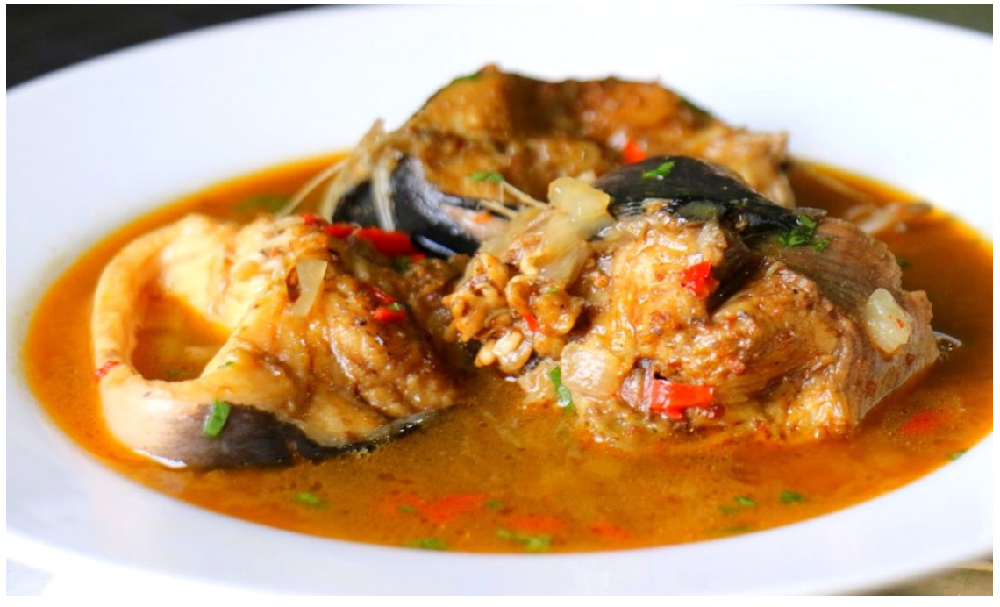

Kochrezepten von
Kariküche
Hier findest du leckere kochrezepte:

I. Pasta mit rotem Pesto und Mozzarella (20min)
1.Lass etwa 2 Liter Wasser in einem großen Topf aufkochen. Füge 1 TL Salz hinzu und koche die Nudeln darin bissfest.
Bereite inzwischen die Soße zu.
2.Röste die Pinienkerne in einer tiefen Pfanne ohne Fett an, bis sie Farbe angenommen haben. Füge das Pesto hinzu und lass es aufkochen. Stelle die Hitze nun auf minimalste Stufe. Warte nun, bis die Nudeln fertig sind. Halbiere inzwischen die Tomaten. 3.Gib etwa 40-50 ml der Nudelflüssigkeit mit zur Soße und lass sie auf höchster Stufe kurz aufkochen und leicht einkochen. Gieß die Nudeln ab. Füge die Kirschtomaten, Mozzarellabällchen und Basilikumblätter zur Soße hinzu und rühre sie durch. Füge die Nudeln hinzu und schwenke die Pfanne. Füge bei Bedarf Salz und Pfeffer hinzu. Serviere das Gericht mit frisch geriebenem Parmesan.

II.Pèpè Soup | Kamerunische Fischsuppe mit Pangasius
1 kg Fisch in Steak geschnitten (Z.B. Pangasius) 16 Djangsang Körner 1/2 TL Bêpê ( 4 Bêpê Nüsse) 4 kleine Stücke quatre côtés 1 TL Pfeffer (Schwarz und Weiß) 1 große Zwiebel 2 große Tomaten 1 Stück Ingwer 1 Stange Sellerie 1/2 Lauch 4 Knoblauchzehen 100 ml Speiseöl 1 Piment/Chilischote 500 ml Wasser Salz Das Rezept stammt ursprünglich aus der Region Littoral, von den Sawa, die hauptsächlich in Douala Region leben und hast sich in ganz Kamerun als einer der lieblings Fischgerichte etabliert. Das beste daran ist, mit den richtigen Zutaten ist Pépé Soup 🥘 einfach zuzubereiten. Die Hauptzutaten für eine leckere 😋 Pépé Soup sind Djangsang und Bêpè. Mit der richtigen Dosierung, gelingt die Suppe immer. Natürlich darf frischer Fisch 🐟 dabei nicht fehlen, man will ja schließlich eine 🐟 Suppe kochen. Obwohl man ebenfalls Fleisch anstatt Fisch nehmen kann, ähnlich wie beim Mbongo Tchobi, ist mir das Original lieber. Als Beilagen zu Pépé Soup passen gekochte Kochbananen (vor allem leicht gelbe), Yamswurzeln, Maniok, Kartoffeln oder Reis. Viel Spaß beim Nachkochen 🍽🔪.
